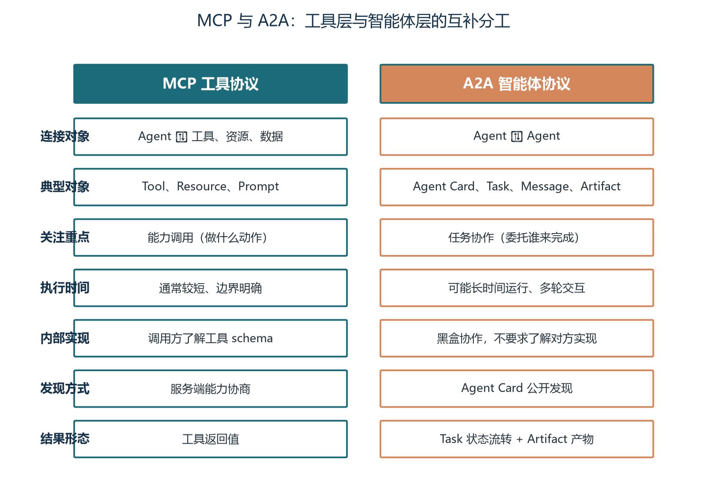
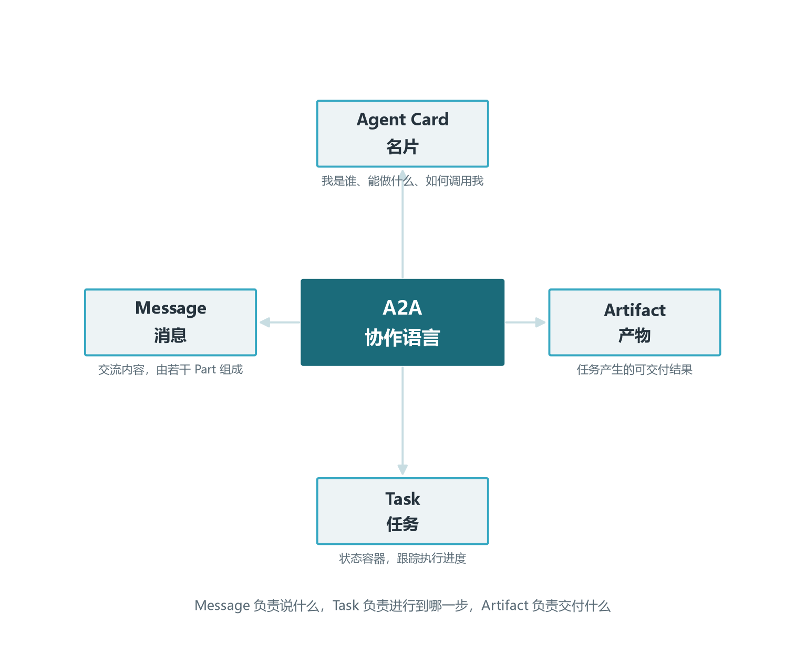
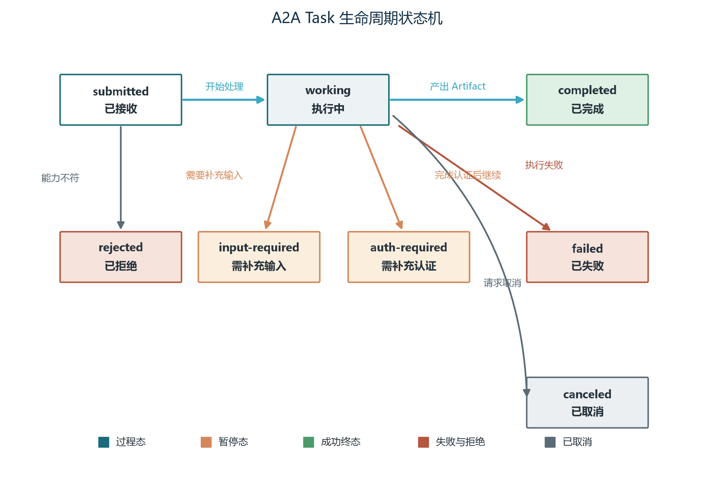
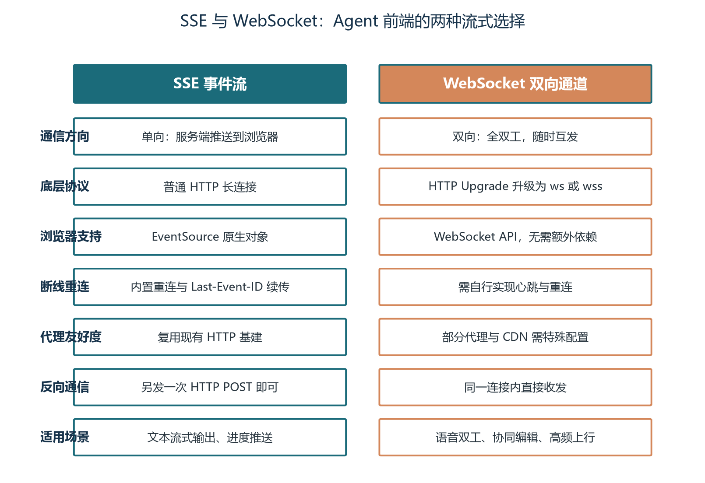
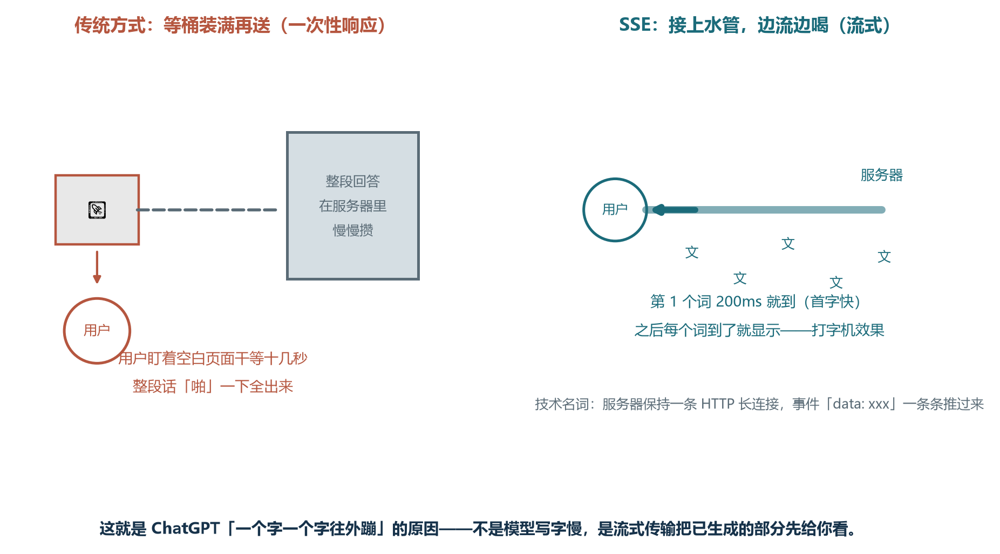
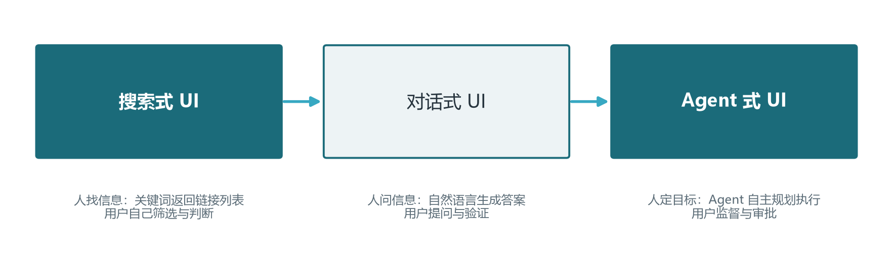

前言：让 Agent 互相说话、让人愿意等待
欢迎来到《Agent 开发工程师修炼手册》卷十四。当我们把单体 Agent 做到能干活、把多智能体系统搭出协作模式（卷十三），下一步必然撞上两堵墙：第一堵墙叫 Agent 与 Agent 的对话——你团队的 Agent 怎么调用另一个团队的 Agent？不同公司、不同框架构建的智能体之间，能不能像浏览器访问网页一样随取随用？第二堵墙叫 Agent 与人的对话——模型一次吐出一千个 token，如果前端要等所有字生成完才显示，用户早就关掉了页面。两堵墙的答案分别落在两个协议上：A2A 解决前者，SSE 家族解决后者。本卷把这两条主线合并为一本教材，让你既能写出跨组织的 Agent 协作代码，也能搭出首 Token 延迟在一秒内的人类可感前端。
这两条线看上去一个在后端、一个在前端，本质却是同一个问题的两面。问题的核心是：Agent 不再是一个孤立的软件，它必须和其他 Agent 谈判、必须把思考过程呈现给用户、必须让人类在关键时刻插话。2025 年 6 月，Google 发布 A2A 协议并随后捐赠给 Linux 基金会，标志着 Agent 协作进入“有标准可依”的阶段；同年，CopilotKit 等团队推动的 AG-UI 协议让 Agent 前端的事件契约走向规范化。这两件事都不是孤立的，它们回应的是同一个产业拐点：当 Agent 数量从几个膨胀到几十个、从单团队延伸到跨组织时，没有协议的协作只能靠点对点适配，没有流式的前端只能给出卡顿的体验。本卷会反复回到这一主线：协议和流式不是装饰品，而是生产级 Agent 系统的承重墙。
本卷是“成系统”阶段的第二卷，也是从“软件形态”走向“协议形态”的桥梁。读完本卷，你将能讲清 A2A 与 MCP 的分工、画出 A2A 四大核心对象、解析一次完整 A2A 请求的生命周期、区分三种任务通信模式、说清 SSE 与 WebSocket 的取舍，并为一个 Agent 式前端规划出流式协议栈和人类在环（HITL）的接入方式。下一卷我们会把视线拉回系统本身的可观测性与评估——只有这两个问题解决，前面十三卷搭起来的工程大厦才算真正“能被运维”。
学完本卷，你将能够：
- 解释 A2A 协议的设计动机、核心边界、与 MCP 的分工以及与普通 REST API 的差异，判断一个集成场景是否值得引入 A2A；
- 描述 A2A 的四大核心对象 Agent Card、Message、Task、Artifact，画出 Task 的完整状态机并解析一次 A2A 请求的六步生命周期；
- 区分同步发送、流式发送与推送通知三种通信模式，理解它们各自的最适场景；
- 用 SSE 与 WebSocket 的最小实现展示首 Token 延迟的区别，理解 Last-Event-ID、断点续传、心跳、背压等工程要点；
- 规划一个 Agent 式前端：进度流、思考可视化、工具调用展示、审批卡片与中断按钮，理解 HITL 在前端层的落地方式；
- 用协议选型对照表为给定业务场景选择合适的前端传输协议，并解释为什么要把 TTFE 作为用户体验的核心指标。
本卷涉及较多协议术语（Agent Card、Task、Artifact、Part、SSE、EventSource、AG-UI、HITL、TTFE），首次出现时会给出英文原文与简要说明；动手实验需要 Python 3.10+ 与 Node 18+ 环境，可使用 httpx、FastAPI、EventSource 等开源库。两类素材的实验性代码都尽量控制在二十行内，可以直接拷贝运行；建议把代码贴进本地编辑器跑一遍，再回过头来读正文的“为什么这么设计”。
第一章 从孤岛到互联：为什么 Agent 需要协议
当你只有一个 Agent 时，所有问题都是“模型+工具+记忆”的组合优化题；当你拥有五个、十个、上百个 Agent，且这些 Agent 由不同团队、不同框架、不同公司构建时，问题就从“单个智能”变成“群体协作”。这一章回答最根本的问题：Agent 为什么需要互相通信？现有的工具协议和普通的 REST 接口为什么不够用？A2A 协议到底填补了什么空白，又不打算解决什么？
1.1 工具的边界与智能体的边界
想象一个跨境的旅行规划任务：用户说“我下个月想去印度出差三天，预算七百美元，请帮我规划行程并换算成卢比”。这句话至少涉及五个独立能力——汇率换算、交通时刻表、酒店筛选、签证政策和预算核算。如果把它们全部塞进同一个 Agent，提示词会越来越长，工具描述会越堆越多，权限边界会模糊，测试与排错会越来越困难。更现实的情况是：这些能力往往由不同团队甚至不同公司拥有，每个团队都不愿意把内部业务规则、Prompt 或工具链暴露给其他团队。于是出现了一个非常常见的现象：每个 Agent 都被迫重复实现一遍“对方的能力”，最后整张集成图变成了一张难以维护的网。这正是 A2A 协议想要解决的核心痛点。
工具和智能体是两种截然不同的能力形态。工具的能力是确定的：给定参数，返回结构化结果，执行时间短、行为可预测；调用方知道工具的输入输出、知道每次调用会消耗多少资源、知道失败的语义是什么。智能体的能力则是不确定的：它需要理解自然语言，可能多轮澄清，会调用自己的工具和数据源，可能运行几分钟甚至几小时；调用方不能假设它使用什么模型、如何规划，也无法把它当作无状态函数来处理。工具适合 MCP 那一类协议来抽象，智能体之间的协作则需要另一层抽象——这就是 A2A 要填补的位置。
这里的关键洞察是：调用工具和调用智能体并非互斥。一个完整的 Agent 内部可能同时使用函数式工具、MCP 资源和 A2A 对外服务；开发者要做的不是选边站队，而是判断每一项能力最适合用哪种抽象来承载。这也是为什么在成熟系统中常常看到“工具用函数、MCP 用资源、Agent 用 A2A”的组合——它们是互补的三层，而不是竞争的三个候选。
1.2 A2A 的设计目标
A2A 的设计可以概括为五个关键词，每一个都对应一类工程需求。互操作：不同厂商、框架和语言实现的 Agent 能够协作，调用方不需要为每个目标实现一遍适配层。黑盒协作：调用方只关心对方的能力和结果，不要求了解对方的模型、Prompt 和内部推理过程——这意味着 Agent 提供方可以自由升级底层实现而不破坏调用方。异步优先：长任务有明确的状态、事件和恢复机制，不会因为 HTTP 连接断开就丢失进度。可发现：通过标准化的 Agent Card 描述能力、接口、认证和技能，让调用方在发起请求前就知道“对方是谁、能做什么、需要什么凭证”。企业可用：尽量复用 HTTP、JSON-RPC、SSE、OAuth 2.0、OIDC、mTLS、JWS 和网关能力，而不是发明一套全新基础设施。这五条目标共同决定了 A2A 不会是一个轻量的“把 JSON 发给另一个服务”的接口——它必须处理会话上下文、任务状态、增量结果、身份认证、错误恢复和版本协商。
这五条目标可以浓缩为一句工程口号：稳定协作边界。A2A 不试图统一 Agent 的内部实现，只试图统一 Agent 对外的对话语言。就像 HTTP 不关心每个网站用 Java 还是 PHP 写，A2A 也不关心每个 Agent 是 LangGraph、AutoGen 还是自研框架搭出来的——只要对外遵守相同的对象与状态语义，任何实现都可以无缝替换。这是“协议”两个字最朴素也最有力量的含义。

1.3 与普通 REST API 的区别
很多人初识 A2A 时的第一反应是：这不就是另一个 REST API 吗？确实，A2A 在传输层大量复用 HTTP，但抽象层次与 REST 有本质区别。REST API 围绕“资源”设计：客户端发送请求，服务端返回资源，响应时间可预期、操作具有幂等性。A2A 的核心问题不是“如何查询一个资源”，而是“如何让一个 Agent 参与一次可能跨多轮、跨多个事件的协作任务”。这种差异带来三个具体的设计后果：第一，A2A 需要一个可以持续跟踪的 Task 对象，状态可以独立于 HTTP 连接而存在；第二，A2A 的 Message 与 Artifact 需要承载多模态内容（文本、文件、结构化数据、URI），而不是仅仅返回一段 JSON；第三，A2A 需要支持流式和推送，让客户端不必一直保持连接也能拿到任务进展。
换一种方式说，REST 服务于确定性的业务接口，A2A 服务于需要理解上下文、可能耗时、可能要求补充输入的 Agent 协作。当一个外部接口的响应时间在数十毫秒级别、行为完全可预测时，REST 仍然是首选；当一个接口的响应时间以分钟计、行为依赖历史交互与上下文时，A2A 才有意义。把两者混为一谈会带来工程上的过度设计——你会为了“统一”而把简单接口也包成 A2A，反而拖慢响应、增加调试成本。本卷第四章会给出一份判断标准。
1.4 A2A 不解决哪些问题
明确 A2A 的边界与明确它的能力同样重要。A2A 不负责选择模型：调用方仍然要决定用 GPT 还是 Claude 来驱动自己的 Agent。A2A 不规定 Prompt 应该怎么写：每个 Agent 的内部推理方式完全私有。A2A 不提供多智能体编排算法：是采用中心编排、点对点协作还是市场式路由，由业务决定而非协议决定。A2A 也不会自动保证输出事实正确：调用方必须对接收到的 Artifact 做 schema 校验、来源校验和业务规则校验。A2A 更不会替代业务权限、数据治理和人工审批。
协议能做的是稳定协作边界，不能消除系统设计责任。一个有用的问题是：在评估协议是否过度设计时，可以用三个问题自我检查。第一，双方的边界是否真的变化频繁，以至于接口必须可协商？如果一次集成后半年不会再改，普通 RPC 也许更合适。第二，是否真的存在不同实现？如果只会有一个团队维护一个 Agent，把能力直接封装在库函数里比走 HTTP 更简单。第三，任务是否需要被多个上游独立调用？如果只是单个后端使用，JSON-RPC 的额外结构就属于无谓成本。只有三个问题都偏向“是”时，A2A 才会显著优于直接函数调用。
A2A 标准化的是 Agent 之间的外部协作语言，而不是 Agent 的内部智能。把它当成“API 治理的升级版”而不是“万能胶水”，是工程师上手前必须建立的认知。
1.5 A2A 与 MCP：维修厂里的工具与专家
一个最直观的比喻来自一个智能维修中心的多 Agent 协作场景。接待 Agent 听取用户报修，零件 Agent 查询库存，报价 Agent 计算费用，维修 Agent 制定方案。这四个 Agent 之间的协作就是 A2A 的典型场景：每个 Agent 都有自己的推理能力、自己的工具集、自己的业务规则，谁也不愿意暴露内部实现，但大家必须协同完成一次跨专业的服务。当接待 Agent 调用价格 API 或读取零件目录时，它是在使用工具——这种连接适合 MCP。当接待 Agent 把“这辆车的故障可能是什么”交给维修 Agent 时，它是在请求另一个具备自主处理能力的 Agent——这种连接适合 A2A。
A2A 与 MCP 关注不同层次的集成问题。MCP 关注“Agent 如何使用外部能力”：它的核心对象是 Tool、Resource 和 Prompt；它的优化目标是能力调用的统一与高效；它通常假设调用方了解工具的 schema 并能同步等待结果。A2A 关注“Agent 如何与另一个 Agent 协作”：它的核心对象是 Agent Card、Task、Message、Artifact；它的优化目标是异步任务的状态可追踪、内容可分块、上下文可延续；它刻意隐藏对方的内部实现。在同一套系统中同时使用这两个协议，比二选一更合理：对外用 A2A 接收协作任务，对内用 MCP 接入工具与数据。一个 Agent 既是一个 A2A 服务的提供者，也是 MCP 工具的消费者，这种“双面身份”是现代 Agent 的常态。
第二章 A2A 核心对象与生命周期
上一章回答了“为什么”，这一章回答“是什么”。A2A 的全部语义都可以归结为四个核心对象：Agent Card 描述身份与能力，Message 承载协作中的对话，Task 跟踪一次任务的完整生命周期，Artifact 承载任务交付的成果。这四个对象互相配合，再加上 JSON-RPC 作为传输层的请求语言，就构成了 A2A 的全部数据模型。本章逐一拆解这四个对象，并走读一次完整的 A2A 请求从发起到交付的全过程。

2.1 Agent Card：Agent 的名片
在调用一个陌生 Agent 之前，客户端首先要知道它是谁、能做什么、通过什么接口通信、需要什么认证。A2A 用 Agent Card 解决这个“自我介绍”问题。Agent Card 通常发布在一个标准化的发现地址，例如 https://example.com/.well-known/agent-card.json，客户端在第一次与目标 Agent 通信时拉取这张名片，缓存起来备用。
一份最小可用的 Agent Card 至少包含以下字段：name（人可读的名称）、description（人可读的简介）、url（A2A 服务入口，可能与发现地址不同）、protocolVersion（协议版本，客户端应做兼容性校验）、preferredTransport（首选传输方式，常见为 JSONRPC）、capabilities（声明是否支持 streaming、pushNotifications、extensions 等能力）、skills（一组可执行技能，每条技能有 id、name、description、inputModes、outputModes 五个属性）、securitySchemes（声明认证方案，可以是 API Key、OAuth 2.0、OIDC 或 mTLS）。下面给出一个生产可用的示例。
{
"name": "汇率查询 Agent",
"description": "提供主要货币之间的实时或近实时汇率换算",
"url": "https://fx.example.com/a2a",
"protocolVersion": "1.0",
"preferredTransport": "JSONRPC",
"capabilities": {
"streaming": false,
"pushNotifications": false,
"extensions": [],
"extendedAgentCard": false
},
"skills": [
{
"id": "currency-convert",
"name": "货币换算",
"description": "将一种货币换算为另一种货币",
"inputModes": ["text/plain", "application/json"],
"outputModes": ["application/json"]
}
],
"securitySchemes": {}
}Agent Card 的工程价值在于：它把“如何调用”也纳入了能力描述。客户端可以先检查 capabilities.streaming，再决定是否调用 message/stream；可以先检查 securitySchemes，再决定如何注入凭证；可以根据 inputModes 和 outputModes 判断目标 Agent 是否能处理某种格式的数据。如果把 Card 写得像一句“智能助手”，客户端就失去了协商的依据；写得具体到“输入文本或 JSON，输出 JSON，仅支持十种主要货币”，客户端就有了清晰的判断标准。一句话经验：Agent Card 是“运行前合同”，含糊的合同意味着含糊的协作。
另一个常被忽略的工程点：Agent Card 不是静态文档。能力、接口和安全策略会随版本变化，客户端必须设置合理的缓存过期时间，并在收到版本不兼容、技能不存在或认证失败时主动重新获取。企业环境中通常还会引入注册中心来管理 Agent 的上线、下线、灰度、回滚和健康检查，但这些字段属于部署治理，不应擅自伪装成协议标准字段。可以把 Agent Card 看作一份“运行前合同”：在每次建立新连接或切换到新版本时，调用方都需要重新确认 Card 是否仍然有效。
2.2 Message 与 Part：协作中的消息和内容
Message 表示参与协作的某一方发送的一条消息。它至少需要说明发送方角色、消息 ID 和内容。Part 是消息内容的组成单元，可以是文本、原始字节、URI 或结构化数据。这种“消息 + 多部件”的设计让一条消息可以同时携带不同形态的内容，而不必强行拼接成一段难以解析的字符串。
常见的 Part 形式可以理解为四种。text：自然语言问题、说明或补充信息，是最常用的形式。raw：文件或二进制内容的 Base64 编码，适合内网对象、临时凭证或敏感文件。url：指向外部文件、报告或资源的地址，适合已经托管在对象存储的资产。data：结构化 JSON，例如订单、表单或指标，便于下游路由与校验。一条消息可以包含多个 Part——客服 Agent 请求退款审核时，消息可以同时包含一段文字、订单 JSON 和一张凭证图片，从而保留内容结构、避免信息丢失。
工程上的经验法则是：“能用文本说清楚就用文本，能用结构化表达就不要混排”。同一份订单数据，既可以塞进一个 JSON 文本 Part，也可以用 DataPart 提供结构化字段。后者对调用方更友好，也更容易被校验和路由；前者则在调试中更直观。把同一信息以两种形式同时提供一般没有好处，反而会让接收方难以确定优先级。文件类 Part 还要区分 URI 与原始字节：如果文件已托管可被外部访问，URI 更轻量；如果涉及临时凭证或敏感内容，原始字节形式可以避免 URL 泄露。两种形式也常常组合：服务端先发送 URI 用于预览，确认后再发带签名的临时下载链接，兼顾性能与访问控制。
2.3 Task：一次协作任务的状态容器
如果 Agent 的响应可以在一秒内完成，客户端可以直接等待结果。但很多实际任务不是这样：酒店搜索需要访问多个系统，合同审核需要等待人工确认，数据分析需要数分钟运行。A2A 用 Task 表示这类持续过程，它的关键设计是把“服务是否完成”从 HTTP 连接中解耦出来——客户端断开连接后仍可以使用任务 ID 查询结果，服务端也可以先返回 submitted 状态，再在后台推进到 working 和 completed。
Task 通常包括任务 ID、上下文 ID、当前状态、状态消息、产物列表和元数据。任务 ID 用于唯一定位一次执行；上下文 ID 用于把多轮消息归入同一协作上下文，方便后续追问复用历史信息。Task 的生命周期视角很重要：它不是一条消息的“结果”，而是一次可能跨越多轮消息的执行单元。客户端可以在 Task 进入 input_required 后补充新消息，服务端在收到新消息后继续推进同一 Task；如果没有 Task，多轮对话就会退化成多个独立消息，导致上下文丢失和状态无法追溯。
在分布式实现里，Task 也是排错和审计的关键对象。所有与同一目标相关的消息、Artifact、状态变化和错误码都可以挂在 Task ID 之下，从而支持事后复盘、性能分析和合规审计。日志系统应保证 Task ID 唯一并贯穿整个执行链，避免出现“同一逻辑任务被记成多次独立调用”的情况。这也是为什么 A2A 的可观测性建设必须围绕 Task ID 展开：没有 Task ID，再多的日志也只是孤立事件，无法回答“用户提的问题最终有没有解决、走了几步、每一步花多久”。
2.4 Artifact：任务交付的成果
Artifact 是任务产生的可交付结果，例如汇率 JSON、旅行计划、分析报告、图片或文件。它与 Message 的区别很重要：Message 是参与者发送的交流内容，Artifact 是执行过程中产生、供调用方消费的结果。一个完整 Agent 任务的生命周期往往是“输入 Message → 多次中间 Message 与状态 → 最终 Artifact”，调用方关心的是 Artifact，而不是过程消息。
Artifact 可以包含多个 Part，也可以通过事件分块传输。流式响应中，客户端可能先收到报告的标题和摘要，随后收到正文片段，最后收到表示结束的事件。对于大文件，还可以返回 URI，而不是把所有字节放进一次响应——这一点对工程实现至关重要：一个 50 MB 的报告如果通过单次 HTTP 响应返回，既占用连接又难以断点续传；改用 URI 让客户端流式下载，才符合 A2A 的异步优先设计。
Artifact 与普通函数返回值最显著的区别是“持久化语义”。客户端拿到 Artifact 后通常会保存或转发给下一环节，而不是只用于即时展示。因此，Artifact 应当具备稳定的 ID、明确的元数据以及可重现的格式约束。一个简单实践是把 Artifact 当作“只读数据集”：一旦发布就不可再变，下游的所有更新都通过追加新 Artifact 来实现。这一约定让多 Agent 协作中的版本管理变得可控——上游 Agent 修正了某个 Artifact，下游 Agent 能根据 ID 判断是否需要替换本地副本，而不必担心“半新半旧”的中间状态。
2.5 JSON-RPC 请求长什么样
A2A 常用 JSON-RPC 2.0 表达方法名、参数、请求 ID 和结果。一个简化的 message/send 请求如下所示。
{
"jsonrpc": "2.0",
"id": "req-1001",
"method": "message/send",
"params": {
"message": {
"messageId": "msg-1001",
"role": "ROLE_USER",
"parts": [
{"text": "将 700 USD 换算成 INR，并返回汇率来源和时间"}
]
}
}
}响应中的 id 用于对应请求。成功时通常在 result 中返回 Task 或消息结果；失败时在 error 中返回错误码、错误消息和可选数据。客户端不要只依据 HTTP 状态码判断任务成功，因为“请求已被接受”和“业务任务已完成”是两个不同层次的结果：HTTP 200 可能只表示服务端已接收，业务上可能最终进入 failed；HTTP 4xx 可能表示参数错误，但前一个 Task 仍在正常推进。把 HTTP 状态、JSON-RPC 错误、Task 状态三层信号分别处理，是 A2A 客户端稳健性的基础。
2.6 六步请求生命周期
一次完整的 A2A 请求可以被压缩为六个步骤，用“旅行规划 Agent 调用汇率 Agent”作为示例最直观。第一步是发现 Agent：客户端访问目标 Agent 的 /.well-known/agent-card.json，获取名称、服务 URL、技能、输入输出模式、版本和认证方案。第二步是验证身份和能力：客户端验证 HTTPS 证书、Card 签名或服务注册信息，并检查协议版本与所需技能是否兼容；如需更详细的能力信息，再在完成认证后调用 agent/getExtendedAgentCard。第三步是发送消息：客户端通过 message/send 发送自然语言或结构化请求；如果预计需要持续接收事件，并且目标 Agent 声明支持流式，则改用 message/stream。
第四步是接收任务和事件：服务端可以直接返回已完成的 Task，也可以先返回 submitted 或 working；流式响应会继续发送任务状态更新、消息更新和 Artifact 更新。第五步是查询、取消或补充输入：客户端可以使用 tasks/get 查询任务，使用 tasks/cancel 取消仍在运行的任务；如果任务进入 input_required 或 auth_required，客户端应根据状态消息补充信息或完成认证。第六步是断线恢复和完成交付：如果客户端在流式过程中断开，可以使用 tasks/resubscribe 重新订阅仍可恢复的任务；如果任务已进入终态，则使用 tasks/get 获取最终 Artifact。
这六步看似线性，实际运行时会反复交错——例如在第五步补充输入后，又会触发新一轮的第四步事件流；在第六步重新订阅时，又可能要回到第三步重新发送确认消息。理解这一点非常重要：A2A 不是“一次请求-一次响应”的 RPC，而是一段“协商-执行-调整-完成”的对话。客户端的设计必须围绕“可能反复”展开：缓存、幂等、重试、续订都要按最坏情况提前布局。

第三章 三种通信模式与任务状态机
上一章我们走通了“一次 A2A 请求由哪些对象组成”，这一章解决“请求和数据如何到达对方”的问题。A2A 给了三种通信模式——同步发送、流式发送、推送通知——分别对应不同的任务持续时间和客户端在线状态。配合第二章介绍的任务状态机，三种模式共同构成了 A2A 在网络层的全部可能性。本章逐一拆解每种模式的最适场景和工程要点，并讨论状态机的设计哲学。
3.1 任务状态不是简单的“成功/失败”
一个典型的 A2A 任务可能经历多条路径。最常见的是 submitted → working → completed；在异常情况下可能转为 failed 或 canceled；如果在 submitted 阶段就被权限或参数拦截，可能直接 rejected。一个看似简单的任务也可能涉及多个来回：working → input_required → working（等待用户补充输入）或 working → auth_required → working（等待用户补充认证）。
把这些状态画在一张状态机上，可以清晰地看到终态与暂停态的区分。completed、failed、canceled、rejected 是终态：任务已经结束，不再接受新消息。submitted、working、input_required、auth_required 是暂停态：任务还在推进中，可能继续推进也可能被取消。区分这两类的意义在于：客户端的轮询、订阅、重试策略应该围绕“当前是否处于终态”来决定，而不是围绕“看起来是否已经完成”来猜测。
状态机的另一个设计哲学是“表达力克制”。它并不意味着每个实现都必须暴露所有状态——服务端应只使用自己支持且符合规范的状态，客户端则应对未知扩展状态保持兼容，并依赖状态类别而不是硬编码某一条路径。一个写得好的客户端会区分“终态”与“暂停态”，对两者采用不同的等待策略；对暂停态设置“最长等待时间”，对终态设置“清理时机”，这种分类思维比记住具体状态名更重要。
3.2 短任务同步：默认选择
message/send 适合汇率换算、格式转换、简单检索等快速任务。客户端发送请求并等待响应，服务端可以直接返回已完成的 Task，也可以返回尚未完成的任务供后续查询。这种模式最简单，也最容易在现有 RPC 框架基础上改造。
“同步”并不等于“没有状态”。即使 HTTP 请求保持连接，客户端仍应记录任务 ID、请求 ID 和上下文 ID，以便日志关联、超时处理和重试。当服务端返回的 Task 仍处于 working 状态时，客户端应按照轮询或长轮询策略继续跟进，而不是简单地把 HTTP 响应视为“请求失败”。判断一个任务是否属于“同步”通常依赖三个条件：可预测的最长执行时间、不需要外部等待、产生的结果可以在一次响应里完整描述。任何一个条件不满足，就应当考虑改用流式或推送。
3.3 长任务流式：实时获得进展
当任务需要较长时间，或者用户希望看到增量结果时，客户端使用 message/stream。底层通常使用 SSE 或其他传输绑定，把事件连续发送给客户端。流式事件可能包含 Task 状态更新、Message 更新、Artifact 增量更新以及任务完成或失败事件。
流式通道最大的价值是“边看边做”。用户可以在 Agent 还没完成时看到过程并提前介入，产品也可以在流式过程中插入二次确认、补充信息和提示。例如在跨境旅行规划场景中，汇率 Agent 在流式返回时可以先发送“预算换算结果”，再发送“已联系交通 Agent 获取候选航班”，最后发送“最终报价与建议”——这种渐进式呈现让等待变成“有意义的等待”，而不是“黑盒的焦虑”。
工程上要注意的是：客户端必须处理事件顺序、重复事件、断线和最终一致性。不要把每个片段都直接显示给用户而不做去重；应使用任务 ID、Artifact ID、事件序号以及 append、lastChunk 等语义重建结果。一个稳健的流式消费客户端至少要做到：以 Task ID 定位任务，以 Artifact ID 定位产物，以事件序号或服务端时间戳辅助排序；相同通知 ID 只处理一次；终态不能被较早的 working 事件回滚；分块 Artifact 只有在收到结束标记后才作为完整结果交付。
3.4 推送通知：客户端不必一直在线
对于运行时间更长的任务，客户端可以创建推送通知配置。服务端在状态或产物发生变化时，向客户端提供的 HTTPS Webhook 发送通知。A2A v1.0 提供了创建、获取、列出和删除推送通知配置四个方法，分别对应不同生命周期。推送通知适合“任务可能跨越数小时，客户端可以离线等待”的场景，它本质上是一种“反向轮询”：客户端提前声明接收地址，服务端在状态或产物变化时主动调用。
推送系统必须考虑五类工程问题。第一，Webhook URL 认证和签名验证：不能让任何能猜到 URL 的人都触发通知接收。第二，重复投递和幂等处理：Webhook 可能因为网络抖动多次发送，接收端必须按通知 ID 去重。第三，超时、退避和重试：Webhook 失败需要指数退避，超过上限进入死信队列。第四，通知内容是否包含敏感数据：状态变化可以明文推送，但 Artifact 大小若过大，应改为只发“任务已变更”通知，再让客户端按需拉取。第五，任务完成后是否自动清理配置：长期保留推送配置会泄露隐私和浪费服务端资源。
3.5 断线、乱序与重复事件
真实网络不会像流程图一样整齐。SSE 可能断线，Webhook 可能重复投递，代理层可能延迟事件。客户端不能假设“收到一次就只执行一次”，也不能仅按到达时间覆盖本地状态。一个稳健的事件处理客户端要做到以下五件事：以 Task ID 定位任务；以 Artifact ID 定位产物；以事件序号或服务端时间戳辅助排序；相同通知 ID 只处理一次；终态不能被较早的 working 事件回滚。
若协议实现没有提供全局事件序号，服务端应在元数据或扩展中给出可恢复游标，并公开其语义。重新订阅也不是无限制的——服务端可能只保留一定时间的事件，任务进入终态后也可能不允许继续订阅。客户端应先查询任务，再根据 Agent Card 和错误信息决定重订阅、直接读取最终产物，还是重新创建任务。这种“先查再决”的设计哲学是 A2A 客户端代码与普通 RPC 客户端代码最大的区别。
3.6 取消并不总是立刻停止
tasks/cancel 表达的是“请求取消”，不意味着底层所有操作会在同一毫秒终止。如果服务端已经提交不可撤销的支付、邮件或外部工单，任务可能无法取消，或者只能停止后续步骤。服务端应明确返回最终状态和已产生的副作用，客户端也不应把网络超时解释为取消成功。
对涉及外部副作用的任务，最好采用“准备—确认—执行”的阶段设计：先生成计划或报价 Artifact，得到用户确认后再执行不可逆动作。这样比依赖取消接口补救更安全。这一原则与卷十六的安全工程一致：在 Agent 领域，“撤销”通常是一个昂贵甚至不可能的能力，“预防”才是更可靠的工程手段。
3.7 通知与回调：把异步推向极致
三种通信模式还可以叠加使用。一个常见的混合模式是：客户端发起 message/send 启动任务，服务端返回 working 状态并通过流式通道持续推送进展；若中途连接断开，客户端通过 tasks/resubscribe 重新订阅；若任务可能跨小时，客户端提前创建 pushNotificationConfig 让服务端在关键节点通过 Webhook 主动通知。这三种模式不是非此即彼，而是按照“任务预期时长”和“客户端在线情况”的两个维度灵活组合。
这种灵活性背后的工程代价是：客户端必须为每种组合实现对应的处理逻辑，包括去重、排序、断点续传、错误恢复。一句话总结：A2A 把“异步”从“某个团队的实现细节”提升到了“协议层面的明确承诺”，这种承诺的价值在于让每个集成方都清楚对方会怎么响应——但它也意味着每个集成方都要为可能的异步场景做好准备。
3.8 任务不是一次请求：持续协商的设计哲学
A2A 与普通 RPC 最根本的差异在于：任务不是一次请求，而是一段协商。普通 RPC 调用方发出请求、服务端执行、服务端返回，三步之间是确定性的因果链。A2A 的调用方发出请求、服务端可能要求补充信息、调用方补充、服务端继续、服务端流式返回部分结果、调用方中途干预、服务端调整方向、服务端最终交付。这种“协商”形态让 A2A 更接近人与人之间的协作：你不希望和一个只能一次性回答“你好”或沉默不语的人合作，你希望和一个能在过程中澄清、调整、确认的伙伴合作。
把这个洞察上升到设计原则：A2A 的所有设计选择——Task 状态机、Message 与 Part 的多模态、Artifact 的持久化语义、三种通信模式的并存——都是为了支撑“持续协商”这一目标。理解这一点，比记住任何一个具体字段更重要。
第四章 前端最后一公里：流式协议
后端协议决定了 Agent 怎么互相说话，前端协议决定了用户怎么看见 Agent 在干活。这一章把视线从 Agent 之间拉回到浏览器和服务器之间。Agent 的输出本质上是“模型一边推理一边吐 token”，如果前端要等所有 token 生成完才渲染，用户等待时间会以十秒甚至更长计。本章围绕“首 Token 延迟”展开，介绍 SSE 与 WebSocket 两种主流流式协议的原理、最小实现、工程要点与选型对照表。第四章是本卷最“工程”、最“可直接动手”的一章，代码示例均可在本地直接运行。

4.1 为什么 Agent 前端必须流式
用一组数据直观感受差异。假设模型推理的 TTFT（Time To First Token）已经被压到 200 毫秒，每秒生成约 12 个 token。如果前端用普通 HTTP（请求-响应）模式读取，对一段 500 token 的回答来说，用户大约需要等待 40 秒才能看到首页——ToC 场景里这是不可接受的体验。如果换成 SSE，浏览器通过 EventSource 立即拿到第一个事件，TTFE（Time To First Event）可以压到 280 毫秒左右，用户立刻看到“你好”两个字开始出现，后续 80 毫秒一个 token 的流式输出在视觉上接近“边打边出”。如果再叠加推理引擎直连 SSE、禁用中间层缓冲、压缩无用 HTTP 头等优化，TTFE 还能再降 30% 至 50%。
这组对比揭示了一个常被低估的事实：当模型本身的延迟已经压到极致，决定用户“等不等到”的反而是传输与前端的最后 1 公里。这也是为什么我们把前端交互与流式协议作为单独一章，并把 TTFE 而非 TTFT 作为最关键的用户体验指标。TTFT 衡量的是模型，T3 时刻；TTFE 衡量的是用户，T5 时刻。前者关心模型有多快，后者关心用户感到多快。两者之间隔着网关、代理、HTTP 解析、浏览器渲染四个环节，任何一个环节多塞 100 毫秒，用户的体验就被抹掉一半。
图4-1 用「喝水」把流式的价值一次讲清：传统方式像等桶装水——整段回答攒齐了才一次性送达；SSE 像接一根水管——第 1 个词 200 毫秒就到，之后边流边看。用户感知的「快」不是模型变快了，而是「先看到」——这正是打字机效果的原理，也是所有 Agent 前端的第一体验。

4.2 SSE 原理：HTTP 之上的轻量事件流
SSE（Server-Sent Events）是 HTML5 时代就被纳入主流浏览器的一项能力。它的设计哲学非常简洁：服务器保持 HTTP 长连接，按“事件”为单位向浏览器推送文本数据流；浏览器端只需一个 EventSource 对象，即可接收并按事件类型分发。传输层使用 HTTP/1.1 或 HTTP/2，可复用浏览器现有的同源、跨域和认证策略；方向是单向（server → client），如果客户端需要反向通信，走普通 HTTP POST 即可。
SSE 的数据格式由几行构成。每条事件由 event 字段（事件类型）、data 字段（载荷，可以是 JSON 字符串）、id 字段（事件 ID，用于 Last-Event-ID 续传）三部分组成；事件之间用空行分隔；服务器还可以发送以冒号开头的注释行作为心跳；retry 字段用于告诉浏览器重连间隔。心跳和事件 ID 是 SSE 区别于“裸长连接”的两个关键特性：前者保证连接不被 NAT 或代理掐断，后者保证断线后可以从断点续传，而不是从头开始。
SSE 在 Agent 场景中有四个天然优势。第一，浏览器与小程序原生支持，无需引入 WebSocket SDK，零额外依赖。第二，可观测性友好，每条事件天然有 trace 日志，可用普通 HTTP 监控工具抓取。第三，中间件友好，Nginx、CDN、反向代理默认透传，长连接不像 WebSocket 那样容易被代理莫名掐断。第四，Token 经济，每次连接只发一次 HTTP 头，后续事件帧可压缩到 100 至 200 字节。
4.3 SSE 最小实现：FastAPI 服务端与 EventSource 客户端
下面给出一个最简的 SSE 服务，用 FastAPI 实现。它返回三个事件：先发送 lifecycle 类型的开始事件，再连续发送 content 类型的字符流，最后发送结束事件。注意三处工程细节：每个事件以 event: 字段声明类型，便于前端按类型路由；data: 字段必须是 JSON 字符串，方便前端结构化解析；响应头必须设置 X-Accel-Buffering: no，否则 Nginx 默认会把响应缓冲到 4KB 才下发，TTFE 直接翻倍。
from fastapi import FastAPI
from fastapi.responses import StreamingResponse
import asyncio, json, time
app = FastAPI()
async def event_stream(prompt: str):
yield f"event: lifecycle\ndata: {json.dumps({'phase':'start'})}\n\n"
for token in ["你", "好", "，", "Agent", "！"]:
await asyncio.sleep(0.08)
yield f"event: content\ndata: {json.dumps({'delta': token})}\n\n"
yield f"event: lifecycle\ndata: {json.dumps({'phase':'done'})}\n\n"
@app.get("/stream")
async def stream(prompt: str = "hi"):
headers = {
"Cache-Control": "no-cache",
"X-Accel-Buffering": "no",
"Connection": "keep-alive",
}
return StreamingResponse(event_stream(prompt), media_type="text/event-stream",
headers=headers)前端消费 SSE 最简单的办法是用浏览器原生的 EventSource。下面这段代码把每条事件按类型分发到对应回调，并在连接出错时打印原因。EventSource 的最大优势是“开箱即用”：自动重连、自动带 Last-Event-ID 头、内置错误处理。劣势是无法设置自定义请求头、无法发送 POST、无法精细控制超时。对于生产环境，往往需要替换为 fetch + ReadableStream 的手写版本。
const es = new EventSource("/stream?prompt=hi");
es.addEventListener("lifecycle", e => console.log("phase:", JSON.parse(e.data).phase));
es.addEventListener("content", e => {
const { delta } = JSON.parse(e.data);
document.getElementById("out").textContent += delta;
});
es.onerror = e => console.error("SSE error", e);4.4 用 fetch + ReadableStream 自定义更强力的客户端
生产环境的 Agent 前端几乎都走 fetch + ReadableStream 这条路，因为原生 EventSource 不够灵活。下面给出一个最小可用版本：可以自定义请求头、可以主动取消（AbortController）、可以区分 HTTP 状态码、可以做应用层心跳检测。每收到一条事件，先按 SSE 协议解析（event、data、id、retry 四种字段），再触发回调。这种手写客户端比 EventSource 多了两三百行代码，但换来的是对生产环境的完全控制。
async function streamChat(prompt, onDelta, onPhase) {
const ctrl = new AbortController();
const res = await fetch("/stream", {
method: "POST",
headers: { "Content-Type": "application/json" },
body: JSON.stringify({ prompt }),
signal: ctrl.signal,
});
if (!res.ok || !res.body) throw new Error("stream failed");
const reader = res.body.getReader();
const decoder = new TextDecoder();
let buf = "";
while (true) {
const { value, done } = await reader.read();
if (done) break;
buf += decoder.decode(value, { stream: true });
const frames = buf.split("\n\n");
buf = frames.pop();
for (const f of frames) {
const evt = parseSseFrame(f); // 自定义解析：event/data/id
if (evt.event === "content") onDelta(JSON.parse(evt.data).delta);
if (evt.event === "lifecycle") onPhase(JSON.parse(evt.data).phase);
}
}
return ctrl; // 暴露 abort 给上层
}这个手写版本的好处是用 AbortController 主动取消、支持自定义请求头、能区分 1xx/2xx/3xx、并且可以扩展为带心跳/超时检测。生产级 Agent 几乎都会走这条路。建议团队一开始就用这个版本，避免“原型用 EventSource、生产再重写一遍”的返工。
4.5 SSE 的两个老问题与解决方案
并发连接数受浏览器同源 6 连接上限影响。HTTP/1.1 时代，浏览器对同一 origin 限制只能有 6 个并发长连接。假设用户同时打开了“对话窗口 1”和“对话窗口 2”，每个窗口都开了 3 个 SSE 通道（用户消息、Agent 回答、状态推送），很容易触顶；第 7 个 SSE 连接会被浏览器“挂起”直到前面某个连接关闭，TTFE 直接飙升。解决办法是启用 HTTP/2：在 HTTP/2 下，浏览器只与服务器建立 1 个 TCP 连接，但可以在上面跑任意多个“逻辑流”，每个 SSE 通道对应一个流，互不干扰。建议团队在生产环境开启 HTTP/2，再多的 SSE 通道也不会撞到 6 并发的天花板。
HTTP/1.1 下每条 SSE 占用一个独立连接。HTTP/1.1 没有多路复用，每条 SSE 都必须独占一个连接，这进一步加剧了同源 6 连接的限制。HTTP/3 进一步在 QUIC 之上提供 0-RTT 握手与多路复用，是未来的方向。短期内，启用 HTTP/2 是最简单也最划算的优化。
还有一个常被忽略的问题是反向通信。SSE 是单向的，用户的中断、修改参数、撤回消息等反向通信怎么办？答案是不必走同一条连接，普通 HTTP POST 就能解决。用户在 SSE 推送过程中想中止生成，前端只要 fetch("/agent/abort", { method:"POST" }) 即可；后端维护一份 run_id → connection 映射，收到 abort 请求就关掉对应的 SSE 流。这种“SSE + POST”的组合比 WebSocket 简单得多，且复用了 HTTP 的所有基础设施：鉴权、限流、监控、CDN 缓存。
4.6 可靠性工程：心跳、续传、断点
SSE 协议定义了 comment 字段（以冒号开头的行）和 retry 字段，用于实现心跳和重连。前端 EventSource 在断线时会自动重连，并自动带上 Last-Event-ID 头；只要服务端按事件 id 持久化（Redis Stream 或 Kafka），就能实现“断点续传”。comment 心跳每 15 至 30 秒发送一次，避免 NAT 或代理 60 秒空闲掐断；事件 ID 让客户端能续传，避免重复或丢失；retry 字段告诉浏览器重连间隔。
生产环境通常不直接用原生 EventSource，因为想要更细的控制：自定义重连退避、请求头、超时、压缩。这时就回到前面给出的 fetch + ReadableStream 手写版本。国内场景还需要考虑兼容性：微信内置浏览器（X5 内核）早期不支持 EventSource；UC 浏览器部分版本 SSE 会被压缩算法破坏。如果应用必须跑在微信里，建议用 fetch + ReadableStream 自实现，避免踩兼容性坑。
4.7 WebSocket：双向高速公路
WebSocket 是一个独立的协议，它在 HTTP 之上做一次 Upgrade 握手之后，就升级为全双工 TCP 通道。两端可以随时主动发送数据帧，没有“请求-响应”的耦合。这种“高速公路”形态适合客户端需要主动且高频地反向推数据的场景：实时语音 Agent（用户说话一边被 ASR 实时识别一边进入模型，需要持续上行音频帧）、协同写作或多人编辑（编辑事件高频双向，光标与选区需要毫秒级同步）、代码助手 IDE 插件（补全、撤销、Diff 推送，用户敲键盘节奏可能高达每秒 20 次）、远程控制类（浏览器 RPA、桌面 Agent、Game Agent）。判断标准很简单：客户端需要主动且高频地反向推数据吗？如果是，用 WebSocket；如果不是，优先 SSE。
下面给出一个 FastAPI 上的 WebSocket Agent 网关最小骨架。文本、音频和控制信令都跑在同一条 WebSocket 上，靠 kind 字段做应用层多路复用。生产中通常会再加一层“子协议”（subprotocol）做版本协商，例如 Sec-WebSocket-Protocol: agui.v1, mcp.v1。
from fastapi import FastAPI, WebSocket
import asyncio, json
app = FastAPI()
@app.websocket("/ws")
async def ws_endpoint(ws: WebSocket):
await ws.accept()
await ws.send_json({"kind": "lifecycle", "phase": "ready"})
while True:
msg = await ws.receive_json()
if msg["kind"] == "user.text":
for token in ["你", "好", "，", "Agent", "！"]:
await asyncio.sleep(0.08)
await ws.send_json({"kind": "assistant.delta", "delta": token})
await ws.send_json({"kind": "assistant.done"})
elif msg["kind"] == "user.audio":
pass4.8 WebSocket 的工程必修课
WebSocket 的“长连接”看起来很美，但很多团队上线后会发现连接莫名其妙断、服务端内存泄漏、Nginx 60 秒空闲就 504。下面是工业级必做的几件事。第一，应用层 ping/pong：每 20 至 30 秒互发一个心跳，2 次无响应即认为连接死亡。第二，代理层超时：Nginx proxy_read_timeout 默认 60 秒，需要调大并配合心跳。第三，消息分帧：单条消息超过 1MB 拆帧，避免某些网关整帧丢弃。第四，断线缓存：客户端断线时未确认事件写入 localStorage，重连后带 last-event-id 续传。第五，指数退避：客户端重连使用 1s → 2s → 4s → 8s 退避，封顶 30s。
另一个常被忽视的工程问题是负载均衡下的粘性。WebSocket 是长连接，传统的“轮询 LB”会把同一个客户端的多次请求分发到不同后端，必须用粘性会话。Nginx 用 ip_hash 指令做 IP 级别粘性；Envoy 用 ring hash 或 maglev LB；云厂商 LB 开启会话保持（基于 cookie 或 source IP）；更高级的做法是把 run_id 写到 URL，由网关层做一致性 hash。粘性策略的代价是“热点用户打到同一台机器”，对超大客户要做“单连接多路复用”的拆分，但这会牺牲实时性，所以大多数 ToB Agent 平台只做 ip_hash 即可。
反向压力是另一个隐藏陷阱。当模型疯狂吐 token、客户端渲染又慢，TCP 缓冲区会塞满，导致 send() 阻塞。解决办法是流控：用 setWriteBufferHighWaterMark 控制写缓冲；背压：发现写缓冲超过阈值就暂停读 LLM 流的下一批 token；合并：把多个 token 攒成 50ms 的批次再 send，减少帧数。实测：浏览器渲染速度通常 60 帧每秒约 16 毫秒每帧，而模型生成 80 毫秒每个 token；把 token 攒到 16 毫秒批次再 send，每秒最多 60 帧，与渲染对齐，CPU 最低。
4.9 协议选型对照表
SSE 与 WebSocket 各有最佳应用边界，下表给出一份速查。
| 维度 | SSE | WebSocket |
|---|---|---|
| 方向 | 单向 server→client | 全双工双向 |
| 浏览器原生支持 | 是（EventSource） | 是 |
| 反向通信 | 走普通 HTTP POST | 原生支持 |
| 鉴权 | 复用 HTTP（Cookie/Bearer） | 握手阶段校验 Token |
| 代理友好 | 高 | Nginx/CDN 需特殊配置 |
| 弱网续传 | Last-Event-ID 内置 | 需应用层实现 |
| 适用场景 | 文本 Agent 流式回答、单向进度推送 | 实时语音、协同编辑、IDE 助手 |
| 不适用场景 | 高频双向控制 | 纯文本流的轻量场景 |
经验法则：客户端不需要反向推数据用 SSE；需要就用 WebSocket。在两者都能用的边界上，优先选 SSE，因为它更简单、代理友好、可观测性更高。
当你拿不准的时候，先用 SSE；如果用户开始抱怨“打字时界面卡顿”或“语音延迟太大”，再升级到 WebSocket。这是一个低风险演进路径。
第五章 Agent 式 UI 与人类在环
流式协议解决了“模型一个字一个字地把回答推给用户”的技术问题，这一章解决“用户应该看到一个什么样的界面”。搜索式 UI 的中心是列表，对话式 UI 的中心是气泡，Agent 式 UI 的中心是“状态”：当前 Agent 在哪一步？调了哪个工具？结果是什么？需要我确认吗？本章先梳理 UI 的三代演进，再讲 Agent 式 UI 的新元素，最后落地 Human-in-the-Loop（HITL，人类在环）在前端的实现方式。

5.1 三代 UI 的演进
互联网产品经历了几轮交互范式迁移。第一代是“搜索式”：用户给关键词，系统返回列表；代表产品是 Google、百度、淘宝搜索；UI 的核心元素是分页、筛选、排序。第二代是“对话式”：用户用自然语言提问，AI 生成答案；代表产品是 ChatGPT、文心一言、通义千问；UI 的核心元素是气泡、流式文本、Markdown 渲染。第三代是“Agent 式”：用户提出目标，AI 自己规划、调用工具、在不确定时向用户求助；代表产品是 Deep Research、Computer Use、编程 Agent；UI 的核心元素是进度流、工具调用展示、审批卡片、中断按钮。
每一代都对前端提出新的要求。搜索式要求快速分页；对话式要求流式文本；Agent 式则要求渐进式渲染、可中断、可撤销、工具可视化、人在回路。本卷第四章讲完的流式协议正是 Agent 式 UI 的运输层基础，而本章讲的是建筑在它之上的应用层界面。一句话：搜索式 UI 的灵魂是列表，对话式 UI 的灵魂是气泡，Agent 式 UI 的灵魂是状态机。
5.2 Agent 式 UI 的新元素
Agent 式界面包含五种前两代没有的元素。第一是进度流：用户需要看到“AI 现在在哪一步”，比如“正在检索资料 → 已找到 8 个候选 → 正在分析每个候选 → 已经分析 3 个”。进度流不是装饰，而是建立信任的关键——当用户看不见状态时，他会假设“系统卡住了”；当用户看见状态在推进时，他会愿意多等几秒。
第二是思考可视化：当 Agent 使用 o1、DeepSeek-R1、Claude 3.7 Sonnet 这类推理模型时，会输出大段 CoT。用户是否应该看到这段思考？实践经验是“默认展示精简版、用户可一键展开完整版、敏感步骤折叠”。展示的好处是建立信任：让用户看到 AI 在认真推理，而不是“想到什么说什么”；展示也能让用户在 AI 推理偏离方向时及时打断。
第三是工具调用展示：当 Agent 调用搜索、计算、写文件、发邮件时，UI 应该以卡片形式呈现“AI 想做什么、参数是什么、影响范围多大”。这种展示既是透明度，也是 HITL 的前置条件——只有让用户看到工具调用，用户才能在需要时批准或拒绝。第四是审批卡片：对于高风险工具（扣款、删数据、发对外消息），前端必须弹窗等待用户确认；确认卡片应列出工具名、参数摘要、影响范围、撤销方式，以及“允许/拒绝/总是允许”三档选择。
第五是中断按钮：用户随时可以按“停止”按钮打断 Agent 的当前输出和后续动作。中断按钮不是“取消”按钮——取消通常意味着回滚，而中断更接近“暂停”：用户停止当前 run 后，可以基于已经生成的文本继续追问，也可以重新开始一个新的 run。这种“软中断”是 AG-UI 协议在 WebSocket 模式下的杀手锏：先发一个 ask 事件问用户是否要继续，再根据用户决定是否真正停止。
5.3 思考过程可视化：层次、组件与反模式
思考过程是分层的：Step（步骤）是一个完整的“思考-行动”循环，比如“理解用户意图”“检索资料”“综合回答”；Thought（内心独白）是步骤内部的推理文本，通常是模型原始的 CoT；Tool（动作）是步骤中具体做了哪个工具调用。前端 UI 通常把 Step 显示为一个折叠面板，里面是 Thought + Tool 的时间线：当前 Step 高亮并配抖动动画，已完成 Step 折叠可展开，未开始 Step 灰色显示。
工业级 Agent 的“思考”实际上是三层：Plan（计划）是 Agent 启动前生成的步骤列表，UI 上以“路线图”形式展示；Step 是计划中的每一步；Thought 是步骤内部的细粒度推理。三层结构带来一个 UX 难题：全部显示就太乱，全部隐藏又让用户失去信任。工程实践上推荐“默认折叠、按需展开”：用户点击某个 Step 才看到 Thought；点击某个 Thought 才看到原始 CoT。
推理模型（o1、DeepSeek-R1、QwQ）会输出超长 CoT，动辄几千 token。如果直接渲染，UI 会卡死；用户也不一定有耐心看完。工程上的应对策略是：折叠显示（CoT 默认收起，仅显示首句“我需要先思考一下”）；流式更新（CoT 不能整段缓存后才显示，必须实时 append）；节流渲染（每 50ms 才更新一次 DOM，避免 React 抖动）；截断保护（超过 8000 token 自动截断并标注“思考过长，已截断”）。
经验法则：思考过程是给用户“监督”AI 用的，不是给用户“阅读”用的。所以默认收起、随时可查、关键节点高亮，是工业级共识。一个反直觉的发现是：让用户看到思考过程，反而能抑制幻觉。原因是“用户在监督”：模型知道有人在看，会更倾向于生成“可解释、可检验”的推理；有监督时，模型倾向于在不确定时调用工具而不是硬编；用户能即时纠正错误方向，减少最终答案的污染。
5.4 人类在环：HITL 在 Agent 流程中的位置
Agent 拥有调用工具、读文件、发邮件、下单、删数据等“高风险动作”的执行权。如果完全自治地运行，任何一次 prompt 注入、模型幻觉、工具故障都可能造成不可逆损失。Human-in-the-Loop（HITL）就是给 Agent 加一道“人审”闸门。HITL 的目标不是“阻止 AI 干活”，而是“在用户能接受风险时让 AI 放手干”。理解这一点，才能避免走向“全自动 Agent 反噬用户”的极端。
风险分级是 HITL 的核心设计问题。低风险动作（只读、查询、计算）：直接执行，不打扰用户。中风险动作（写本地文件、修改内部数据）：执行后通知，可一键回滚。高风险动作（对外发消息、扣款、删库、改权限）：必须弹窗确认。极高风险动作（生产环境 DROP DATABASE）：双重确认 + 二次验证码 + 审计。HITL 不是“越多越好”：每一次确认都会打断用户的心流，需要回答“用户为这次确认愿意付出多少成本”。
在金融行业，HITL 是合规红线。资金划转必须人工输入密码或短信验证码或指纹；投资建议必须人工最终确认并电子签名；合同生成的关键条款必须高亮并由用户勾选；所有确认记录保存不少于 5 年，满足审计要求。医疗行业类似：诊断建议 AI 只能辅助，最终诊断由执业医师确认；用药建议的剂量、禁忌、相互作用必须人工复核；病历修改的所有修改必须记录医生 ID 和时间戳。在强监管行业，HITL 不仅是体验问题，更是合规问题。
5.5 input_required 状态的前端呈现
A2A 协议中的 input_required 状态是 HITL 在协议层的体现：当 Agent 需要补充业务输入时，它把任务置为 input_required 并附带状态消息说明需要什么。前端的呈现方式应该是“正式的交互卡”，而不是“异常弹窗”。具体而言，状态消息要告诉用户需要什么、为什么需要、提交后会发生什么，并为长期未处理任务设置提醒和过期策略。
一个良好的 input_required 卡片包含五要素：标题（明确告诉用户“AI 正在等待你的输入”）、原因（解释为什么需要这个输入，可能是“缺少必要信息”或“需要你做出选择”）、表单（针对 input_required 渲染相应的输入控件：文本框、单选、多选、文件上传）、影响（说明提供这些输入后任务会怎么推进）、撤销路径（用户随时可以取消或返回上一轮对话）。把这五要素做齐全，HITL 就从“打扰”变成“参与”；用户从“旁观者”升级为“合作者”。
5.6 多 Agent 进度的可视化
当一个任务由多个 Agent 协作完成时，前端需要呈现“谁在做什么”。常见的可视化模式有三种：并行泳道（用横向泳道图展示每个 Agent 当前进度，时间轴对齐）、依赖图（用 DAG 图展示 Agent 之间的依赖关系，已完成节点灰色、正在执行节点高亮、未开始节点淡色）、聚合摘要（用一句话总结每个 Agent 的最新产出，详情可展开）。三种模式各有最佳场景：并行泳道适合演示和调试，依赖图适合技术用户，聚合摘要适合 ToC 产品。
从工程实现看，多 Agent 进度的可视化高度依赖协议层的事件流。如果底层协议（如 AG-UI）能在每个事件里携带 runId 与 agentId，前端就能按 Agent 分组；如果底层只透出一个混合事件流，前端就需要做事件溯源和重建。建议团队在协议设计阶段就把 agentId 作为必填字段，避免后期补救。
5.7 把 TTFE 作为最关键的用户体验指标
TTFE（Time To First Event）是衡量用户“从敲下回车”到“看到第一个字符”之间总时长的核心指标。它涵盖了 T0（浏览器发起请求的 DNS/TCP/TLS 握手）、T1（网关鉴权、限流、prompt 拼装）、T2（检索增强）、T3（模型推理首字）、T4（第一个 token 经过网关回到浏览器）、T5（浏览器解析 + React 渲染到首屏）共六个环节。TTFT 只关心 T3，TTFE 关心 T0 到 T5 的总和。前者是模型指标，后者是用户体验指标。
团队应该把 TTFE 作为最关键的用户体验指标，TTFT 退居二线。延迟预算（latency budget）就是把端到端总目标（比如 TTFE 小于 1 秒）拆到每个环节，上线后用监控保证每个环节都不超。建议把预算表写进 Grafana 仪表板，每一条都接 SLO 告警；延迟管理就变成了一项数据驱动的工程。
常见的“假延迟”往往让团队困惑：明明 TTFT 200ms，TTFE 怎么 1.5s？最常见的元凶包括 Nginx buffering（没加 X-Accel-Buffering: no）、Python requests buffering（没用 stream=True）、CDN 边缘缓存（命中失败导致跨地域 RTT）、前端 hydration（整个 React 树就绪才渲染）、骨架屏延迟（故意延后 200ms 显示 Skeleton）。遇到 TTFE 异常时，先打印每个环节的“是否 buffering”状态，80% 的问题不是慢，而是某个环节“故意”在等。
5.8 一份 Agent 式前端的上线 checklist
最后给出一份可直接用于上线前 review 的清单。流式相关：已设置 Content-Type: text/event-stream；已设置 Cache-Control: no-cache；已设置 X-Accel-Buffering: no；Nginx 已关闭 proxy_buffering；CDN 或网关已启用 HTTP/2；每条事件都带 id 字段；已发送 comment 心跳；已处理 Last-Event-ID 续传；已提供 abort 接口；前端使用 fetch + ReadableStream 或 EventSource 且有错误处理。
AG-UI 相关：事件类型与字段符合 AG-UI 规范；已实现 RUN_STARTED 与 RUN_FINISHED 生命周期；TOOL_CALL 事件包含完整的 start/args/end/result；STATE_DELTA 使用 JSON Patch；前端 reducer 能处理所有事件类型；已实现渐进式渲染；已实现可中断（abort/interrupt）。HITL 相关：已定义风险分级表；高风险工具执行前必须弹窗；弹窗文案明确说明影响范围和撤销方式；用户选择已写入审计日志；已实现“总是允许”的过期机制；移动端确认 UI 全屏显示。
延迟与监控相关：已接入 TTFE 与 TTFT 埋点；OpenTelemetry trace 覆盖端到端链路；Grafana 仪表板包含延迟预算 vs 实际；告警已分级（P0/P1/P2/P3）；已定义降级策略。这份 checklist 不是“一次性项目”，而是持续迭代的过程。Agent 的前端交互协议会随模型能力、用户需求、监管要求不断演化，保持对 TTFE、AG-UI、HITL 的关注，是团队长期竞争力的来源。
本卷小结
本卷围绕两条主线展开。第一条主线是 Agent 之间的协作协议 A2A。我们从“为什么需要 Agent 协议”出发，明确了 A2A 与 MCP 的分工——MCP 连接“Agent 与工具”，A2A 连接“Agent 与 Agent”，两者互补而非竞争；接着拆解了 A2A 的四大核心对象（Agent Card、Message、Task、Artifact），走读了一次 A2A 请求的六步生命周期，区分了同步、流式、推送三种通信模式，并深入讨论了 Task 状态机的设计与“持续协商”的工程哲学。A2A 不是“让所有 Agent 变成同一种 Agent”，而是让不同实现的 Agent 能够用共同语言协作。
第二条主线是 Agent 与人之间的前端流式协议。我们从“首 Token 延迟”出发，指出决定用户“等不等到”的不是 TTFT 而是 TTFE；接着讲解了 SSE 的原理与最小实现（FastAPI 服务端 + EventSource / fetch + ReadableStream 客户端），讨论了断线重连、心跳、背压、断点续传等工程要点；再对比了 WebSocket 的双向通信能力与适用场景，给出了协议选型对照表；最后展开 Agent 式 UI 的设计哲学，重点讲了思考过程可视化与 Human-in-the-Loop（HITL）在前端的落地方式。
把两条主线合并看，本卷的主旨可以浓缩为一句话：协议和流式不是装饰品，而是生产级 Agent 系统的承重墙。当 Agent 数量从几个膨胀到几十个、当用户对等待的耐心以毫秒计，没有 A2A 的协作只能靠点对点适配，没有 SSE 的前端只能给出卡顿的体验。在 Agent 系统的工程化征途中，卷十四既是上一卷多智能体协作的对外延伸，也是下一卷可观测性与评估的前置条件——只有这两条承重墙稳固，上面才能盖出真正可运维、可信任、可规模化的 Agent 产品。
本卷实战实验室
本卷实验：亲手把"打字机效果"做出来，并测出关键指标 TTFE。总耗时约 60 分钟；需要 pip install fastapi uvicorn。
实验 1：SSE 流式服务 + 最简前端（40 分钟）
以 §4.3 代码为骨架：FastAPI 逐词推送，前端用 15 行 HTML（EventSource）展示。验收标准：浏览器里文字逐个蹦出；打开 DevTools 的 Network 面板找到那条 eventsource 长连接，数一数 data 帧的数量——每帧就是一个 token（§4.2）。
实验 2：测出 TTFE 并做一次优化（20 分钟）
t0 = time.time()
yield f"data: {json.dumps({'t': 'start'})}\n\n"
first = None
for chunk in llm_stream():
if first is None:
first = time.time()
print(f"TTFE = {first - t0:.0f}ms") # 用户看到第一个字
yield f"data: {json.dumps({'t': 'delta', 'v': chunk})}\n\n"验收标准：得到你环境里的 TTFE 数字；再做一个优化实验——把系统提示词固定为常量并启用上游前缀缓存（卷05 §6.5），对比 TTFE 变化。验收：TTFE 至少改善 20%，并能解释原因。
Nginx 默认缓冲会"攒一批再发"，前端看起来仍是整段蹦出——关掉 proxy_buffering（§6.10）；EventSource 只支持 GET，POST 场景用 fetch + ReadableStream（§4.4）。
思考与练习
- 1. 选型判断。给定一个企业内部“员工报销审批”场景：报销 Agent 需要调用 OCR 服务读取发票图像、调用预算系统校验额度、调用审批中心走人工审批。请用本卷学到的 A2A 与 MCP 分工知识，画出“哪些能力用 MCP、哪些用 A2A”，并说明理由。如果改用普通 REST API 实现，会有什么后果？
- 2. 协议设计。假设你需要为团队设计一个 Agent Card。请列出至少八个字段（必填或推荐），并对每个字段说明“如果是空值或不填，调用方会遇到什么问题”。结合第二章给出的最小 Agent Card 示例做对照。
- 3. 状态机解析。给定一个 Task 经历了“submitted → working → input_required → working → completed”的状态序列，请用第二章与第三章学到的概念回答：第一次进入 working 与第二次进入 working 在语义上有什么区别？客户端应该用什么不同的方式处理？
- 4. 前端实现。用 Python 写一个 FastAPI 的 SSE 接口，要求每 100 毫秒推送一个字符，事件类型分别为 content（携带 delta）和 lifecycle（携带 phase: start/done）。再用 JavaScript 写一个 fetch + ReadableStream 客户端，要求支持 AbortController 主动取消。运行后用浏览器开发者工具观察首字符出现的延迟。
- 5. 工程权衡。某 ToB Agent 产品初期用 SSE，团队最近收到客户投诉“多人协作时鼠标位置同步有 200 毫秒延迟”。请用本卷学到的协议选型知识判断：应该升级到 WebSocket，还是通过优化 SSE 解决？请给出至少三条判断依据与一套具体的改造方案要点。
面试题精选（附参考答案）
本节题目主要改编自配套面试题集《A2A 协议经典面试题 40 道》，均可在本卷正文中找到对应章节，并依据本卷内容补充新编了前端流式交互方向的 3 道题（题8至题10），用于面试准备与知识自测。答案均为要点式压缩，保留关键数据、术语与结论；建议先自行作答，再对照参考答案查漏补缺。
题1 什么是 A2A 协议？它解决的核心问题是什么？
A2A（Agent2Agent）是 Google 于 2025 年 6 月发布、随后捐赠给 Linux 基金会的 Agent 间协作开放协议，让不同框架、不同厂商、不同语言实现的 Agent 能够标准化地互相发现、通信与协作。它解决的核心问题是：当多个专业 Agent 需要跨团队、跨系统协作时（如旅行规划涉及汇率换算、交通、酒店、签证、预算五个能力），点对点自定义接口会织成一张难以维护的集成网，每个 Agent 还被迫重复实现对方的能力。A2A 提供一套公共协作语言：用 Agent Card 介绍能力、用 Message 发送消息、用 Task 跟踪任务、用 Artifact 交付结果。一句话总结：A2A 不是让所有 Agent 变成同一种 Agent，而是让不同实现的 Agent 用共同语言协作，即稳定协作边界（见本卷 1.1、1.2 节）。
- 设计目标五关键词：互操作、黑盒协作、异步优先、可发现、企业可用；A2A 复用 HTTP、JSON-RPC、SSE、OAuth 2.0 等现有基础设施，而不另发明一套。
题2 A2A 与普通 REST API 的本质区别是什么？
REST 围绕资源设计，响应时间可预期、操作幂等；A2A 的核心问题不是查询资源，而是让一个 Agent 参与一次可能跨多轮、跨多个事件的协作任务。由此带来三个设计后果：需要可独立于 HTTP 连接持续跟踪的 Task 对象；Message 与 Artifact 要承载文本、文件、结构化数据等多模态内容；需要支持流式与推送，客户端不必一直保持连接。选型上，响应以数十毫秒计、行为完全可预测的接口仍首选 REST；响应以分钟计、依赖历史上下文的 Agent 协作才值得用 A2A，把两者混为一谈会造成过度设计（见本卷 1.3 节）。
- 判断是否引入 A2A 的三问：双方边界是否频繁变化、是否真的存在不同实现、任务是否被多个上游独立调用；三问皆偏向是时，A2A 才显著优于直接函数调用（见本卷 1.4 节）。
题3 A2A 与 MCP 的核心区别是什么？如何组合使用？
MCP 关注 Agent 如何使用外部能力，核心对象是 Tool、Resource、Prompt，通常假设调用方了解工具 schema 并能同步等待结果；A2A 关注 Agent 如何与另一个有自主能力的 Agent 协作，核心对象是 Agent Card、Task、Message、Artifact，追求异步任务状态可追踪、内容可分块、上下文可延续，并刻意隐藏对方内部实现。比喻：MCP 是维修厂的工具箱，A2A 是维修厂里各怀绝技的专家同事——接待 Agent 查价格 API 是用 MCP，把故障判断交给维修 Agent 是用 A2A。两者是互补的三层（工具用函数、MCP 用资源、Agent 用 A2A），应组合而非二选一：对外用 A2A 接收协作任务，对内用 MCP 接入工具与数据，一个 Agent 既是 A2A 服务提供者，又是 MCP 工具消费者（见本卷 1.1、1.5 节）。
题4 Agent Card 是什么？包含哪些关键字段？
Agent Card 是描述 Agent 身份、能力、接口与认证方案的标准化名片，发布在标准化发现地址（如域名下的 .well-known/agent-card.json），客户端首次通信前拉取并缓存。最小字段包括：name、description、url（服务入口）、protocolVersion（客户端应做兼容性校验）、preferredTransport、capabilities（声明是否支持 streaming、pushNotifications、extensions 等能力）、skills（每条技能含 id、name、description、inputModes、outputModes 五个属性）、securitySchemes（API Key、OAuth 2.0、OIDC 或 mTLS）。工程价值是把调用方式也纳入能力描述：客户端可先查 capabilities.streaming 决定是否用 message/stream，先查 securitySchemes 决定如何注入凭证。它是运行前合同，且不是静态文档，应设置缓存过期时间，并在版本不兼容或认证失败时主动重新获取（见本卷 2.1 节）。
题5 A2A 四大核心对象的职责与关系是什么？
四个对象各司其职：Agent Card 说明我是谁、能做什么、如何找到我；Message 负责说什么，其内容由一个或多个 Part 组成，Part 支持 text（文本）、raw（Base64 字节）、url（外部资源地址）、data（结构化 JSON）四种形态；Task 负责进行到哪一步，是可能跨多轮消息的执行单元，包含任务 ID、上下文 ID、当前状态、状态消息、产物列表和元数据；Artifact 负责交付什么，是执行过程中产生、供调用方消费的结果。一次任务的典型生命周期是：输入 Message，经过多次中间消息与状态更新，最终产出 Artifact。Artifact 与 Message 的关键区别在持久化语义：应把 Artifact 当作只读数据集，发布后不再修改，下游更新一律通过追加新 Artifact 实现，让多 Agent 协作的版本管理可控（见本卷 2.2 至 2.4 节）。
题6 Task 状态机包含哪些状态？终态与暂停态如何区分？
常见路径是 submitted 进入 working 再到 completed；异常时转为 failed 或 canceled；在 submitted 阶段被权限或参数拦截可能直接 rejected；多来回场景存在 working 与 input_required、auth_required 之间的往返（等待补充输入或补充认证）。completed、failed、canceled、rejected 是终态，任务结束、不再接受新消息；submitted、working、input_required、auth_required 是暂停态，任务仍在推进中。区分的意义在于：客户端的轮询、订阅、重试策略应围绕当前是否处于终态来决定，对暂停态设置最长等待时间，对终态设置清理时机，而不是靠猜测。Task 的核心价值是把服务是否完成从 HTTP 连接中解耦：客户端断开后仍能用任务 ID 查询结果（见本卷 2.3、3.1 节）。
- 客户端应对未知扩展状态保持兼容，依赖状态类别而非硬编码某一条路径（见本卷 3.1 节）。
题7 A2A 有哪三种通信模式？各适合什么场景？
其一，同步发送 message/send：适合汇率换算、格式转换、简单检索等快速任务，是默认选择；适合同步的三个条件是可预测的最长执行时间、不需要外部等待、结果能在一次响应中完整描述。其二，流式发送 message/stream：任务耗时较长或需要增量结果时使用，底层常用 SSE 持续推送 Task 状态更新、Message 更新与 Artifact 增量更新，让用户边看边做、可中途介入。其三，推送通知：任务可能跨数小时、客户端可离线等待时使用，服务端向客户端预留的 HTTPS Webhook 主动推送，本质是反向轮询；A2A v1.0 提供创建、获取、列出、删除四个推送配置方法。三种模式可按任务预期时长与客户端在线情况两个维度叠加组合，流式中途断线时用 tasks/resubscribe 重新订阅（见本卷 3.2 至 3.4、3.7 节）。
题8 什么是 TTFE？为什么 Agent 前端必须做流式？
TTFT（Time To First Token）只衡量模型吐出首个 token 的速度，是模型侧指标；TTFE（Time To First Event）衡量用户从敲下回车到看到第一个字符的总时长，覆盖 T0 浏览器握手、T1 网关鉴权、T2 检索增强、T3 模型首字、T4 token 经网关回到浏览器、T5 浏览器解析渲染六个环节，才是用户体验指标。一组数据：模型 TTFT 已压到 200 毫秒、每秒生成约 12 个 token 时，500 token 的回答用普通 HTTP 要等约 40 秒才见内容；改用 SSE 后浏览器经 EventSource 立即拿到第一个事件，TTFE 可压到约 280 毫秒，视觉上接近边打边出。当模型延迟已压到极致，决定用户等不等到的反而是传输与前端的最后一公里。团队应把 TTFE 作为核心体验指标，用延迟预算把端到端目标拆到各环节并接入 SLO 告警（见本卷 4.1、5.7 节）。
- TTFE 异常时先排查各环节是否在缓冲：Nginx 默认缓冲（需设置 X-Accel-Buffering 为 no）、未用流式读取、CDN 边缘缓存、前端 hydration 等——八成问题不是慢，而是某环节故意在等。
题9 SSE 与 WebSocket 应如何选型？
SSE 是服务器保持 HTTP 长连接、以事件为单位向浏览器单向推送文本流的协议；每条事件由 event（类型）、data（JSON 载荷）、id（用于 Last-Event-ID 断点续传）字段组成，事件间用空行分隔，冒号开头的注释行可作心跳（每 15 至 30 秒一次，防止 NAT 或代理掐断空闲连接），retry 字段告知重连间隔。其优势是浏览器原生支持、代理与 CDN 友好、可观测性好。短板是单向：中断、改参数等反向通信走普通 HTTP POST 即可；HTTP/1.1 下受同源 6 连接上限约束，生产环境应启用 HTTP/2 多路复用。WebSocket 经一次 Upgrade 握手后升级为全双工 TCP 通道，适合客户端需要主动且高频反向推数据的场景：实时语音、协同编辑、IDE 助手等。经验法则：不需要反向推数据用 SSE，边界情形优先 SSE，等用户抱怨卡顿再升级 WebSocket（见本卷 4.2、4.5 至 4.7、4.9 节）。
- 原生 EventSource 无法设置自定义请求头、无法发送 POST；生产环境建议用 fetch 加 ReadableStream 手写客户端，支持 AbortController 主动取消与心跳超时检测（见本卷 4.3、4.4 节）。
题10 Agent 式 UI 有哪些新元素？HITL 在前端如何落地？
Agent 式 UI 的中心是状态，包含五种前两代 UI 没有的元素：进度流（让用户看见当前步骤，建立信任）、思考可视化（Plan、Step、Thought 三层，默认折叠、按需展开）、工具调用展示（以卡片呈现想做什么、参数与影响范围）、审批卡片、中断按钮。HITL（人类在环）的核心是风险分级：低风险动作（只读、查询）直接执行；中风险（写本地文件）执行后通知、可回滚；高风险（扣款、删数据、对外发消息）必须弹窗确认；极高风险双重确认加二次验证码加审计。A2A 的 input_required 状态是 HITL 在协议层的体现，前端应把它呈现为正式的交互卡而非异常弹窗，卡片含标题、原因、表单、影响、撤销路径五要素。中断按钮是软中断：停止当前 run 后可基于已生成内容继续追问，而非回滚式取消（见本卷 5.1、5.2、5.4、5.5 节）。
- 推理模型的长思考需流式更新并节流渲染（约每 50 毫秒更新一次 DOM），超长时截断保护；实践发现让用户看到思考过程反而能抑制幻觉（见本卷 5.3 节）。
下一卷预告
下一卷《可观测性与评估体系》是“成系统”阶段的收官之作。当 Agent 系统从“能用”走向“好用”、从“Demo”走向“生产”，有两个问题会同时浮现：一是“线上到底发生了什么”——单次任务调用了几次模型、每次模型选了什么工具、花了多少 Token、有没有失败步骤，这就是可观测性；二是“这个 Agent 到底有多好”——准确率、任务完成率、平均轮数、HITL 拒绝率、用户体验 NPS，这些是评估体系。卷十五会把 OpenTelemetry 链路追踪、LangSmith 类日志平台、Agent 评测基准、生产环境告警与降级串成一套完整的运维体系，并给出“上线前必须回答的 30 个评估问题”与“故障定位的 12 个高频场景”。可观测性让你知道系统“没坏”，评估体系让你知道系统“没退步”，两者结合，Agent 系统才能从“能跑”走向“能长期稳定地跑”。